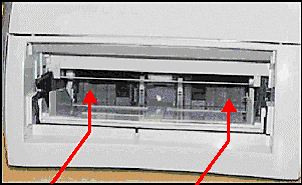

This document provides instruction for troubleshooting these HP 1200 issues:
Jams
Paper Feed Issues
Overview of Jamming
Occasionally, media can become jammed during a print job. Some of the causes include:
The input trays are loaded improperly or too full.
The media does not meet HP specifications.
Note:
To prevent multiple sheets of media from feeding through the printer simultaneously after adding new media, always remove all of the media from the input tray and straighten the stack of new media.
Software errors and lights on the printer control panel provide notification of a media jam.
Mylar Shields Caution
Caution: Two black Mylar light shields, approximately 3.5 inches long, are located on each side of the pickup roller under the pickup roller rod. One or both of these black Mylar shields can get tucked under or partially bent when removing a paper jam from the paper input tray slot.

Typical Jam Locations
Locations at which jams normally occur:
Toner cartridge area: Refer to the instructions for removing a jammed page.
Input tray areas: If the page is still sticking out of the input tray, gently try to remove it without tearing the page. If resistance is felt, refer to the instructions for removing a jammed page.
Output paths: If the page is sticking out of the output bin, gently try to remove it without tearing the page. If resistance is felt, refer to the instructions for removing a jammed page.
Note: There might be loose toner in the printer after a media jam. This toner clears up after a few sheets print.
Troubleshooting
Issue
Action
Page Jammed
Remove a jammed page.
Caution: Media jams might cause loose toner on the page. If toner gets on your clothes, wash them in cold water. Hot water permanently sets the toner into the fabric.
Open the toner door and the straight-through output door.
Rotate the green pressure-release levers downward.
Caution: To prevent damage to the toner cartridge, do not expose it to light.
If the media can be removed without removing the toner cartridge, do so. If not, remove the toner cartridge and place the cartridge aside.
With both hands, grasp the side of the media that is most visible (this includes the middle), and carefully pull the media free from the printer.
After the jammed media is removed, reinstall the toner cartridge, close the toner door, and close the straight-through output door.
Note:
The pressure- release levers automatically close when the straight-through output door is closed. After clearing a media jam, the printer might require cycling off and on to clear the software.
When new media is added, remove all of the media from the input tray and straighten the media with the stack of new media.
Paper Jam
Clear paper jams.
Open the straight-through output door, and press the door release button to open the scanner door.
Find and grasp the original from the straight-through output door or copier/scanner door, whichever side sticks out further.
Pull gently and steadily.
Note: When new originals are added, always remove the originals from the input tray and straighten the stack of new originals.
Paper Feed
When printing, paper does not pick-up or feed into the printer, causing paper jams or wrinkled output. The symptoms are:
The pickup roller spins and tries to pick-up paper.
The paper feeds into the printer partially accompanied by a crackling, crunching noise then jamming.
Note: The paper can feed through the paper path completely accompanied by a crackling, crunching noise. The output will be skewed and wrinkled.
Reposition the black Mylar light shields into the correct position.
Caution: Unplug the power cord from the printer.
Check the two black Mylar light shields, each approximately 3.5 inches long, in the pickup area of the printer. They are located on both sides of the pickup roller under the pickup roller rod. One or both of theses black Mylar shields can get tucked under, or partially bent when removing a paper jam from the paper input tray slot.
Unplug the power cord from the printer.
Remove the paper and paper input tray.
Slide your hands, palms side up, into the paper input tray cavity until the ends of your fingers reach the end of the cavity.
Bend the plastic fingers up to push the black Mylar light shields into place. The correct position of the black Mylar light shield is flat.
Reconnect the power cord.
Verification
Print a self-test or configuration page to verify that the printer is functioning correctly.